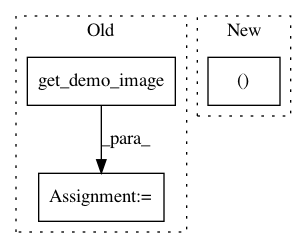

0f7770a611b38d51839f4d449ba75dd7691660f1,lib/mpl_toolkits/tests/test_axes_grid1.py,,test_inset_locator,#,127
Before Change
fig, ax = plt.subplots(figsize=[5, 4])
// prepare the demo image
Z, extent = get_demo_image()
Z2 = np.zeros([150, 150], dtype="d")
ny, nx = Z.shape
Z2[30:30 + ny, 30:30 + nx] = Z
After Change
// prepare the demo image
// Z is a 15x15 array
Z = np.load(cbook.get_sample_data("axes_grid/bivariate_normal.npy"))
extent = (-3, 4, -4, 3)
Z2 = np.zeros([150, 150], dtype="d")
ny, nx = Z.shape
Z2[30:30 + ny, 30:30 + nx] = Z
In pattern: SUPERPATTERN
Frequency: 4
Non-data size: 3
Instances
Project Name: matplotlib/matplotlib
Commit Name: 0f7770a611b38d51839f4d449ba75dd7691660f1
Time: 2019-08-22
Author: anntzer.lee@gmail.com
File Name: lib/mpl_toolkits/tests/test_axes_grid1.py
Class Name:
Method Name: test_inset_locator
Project Name: matplotlib/matplotlib
Commit Name: 55bab51c4b43d50ea6fc52cb752877a6df618ce2
Time: 2018-08-04
Author: jklymak@gmail.com
File Name: examples/axes_grid1/inset_locator_demo2.py
Class Name:
Method Name:
Project Name: matplotlib/matplotlib
Commit Name: 60e9ec01c86b3060f6bffd4802502d31029d9b9b
Time: 2018-05-16
Author: elch.rz@ruetz-online.de
File Name: examples/axes_grid1/inset_locator_demo2.py
Class Name:
Method Name:
Project Name: matplotlib/matplotlib
Commit Name: 0f7770a611b38d51839f4d449ba75dd7691660f1
Time: 2019-08-22
Author: anntzer.lee@gmail.com
File Name: lib/mpl_toolkits/tests/test_axes_grid1.py
Class Name:
Method Name: test_inset_axes